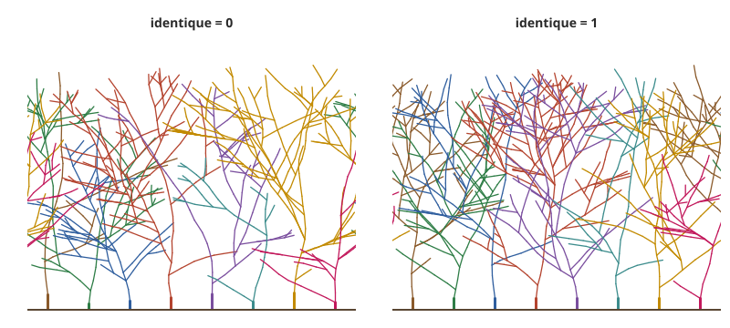
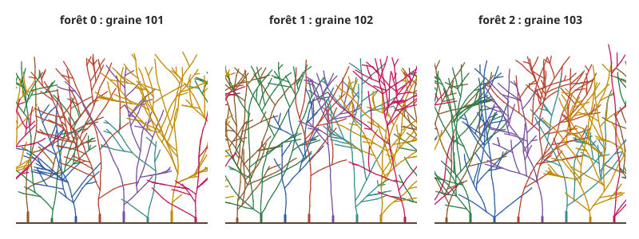

TI301 – Algorithms and Data Structures 2 · Computer Science and Mathematics Project
The Forest and the Light Part 3
This project is written jointly for the SDD2 and Probability modules.
Original idea, design, implementation: Nicolas FLASQUE Validation for the probability module: Federico ZALAMEA, Brice JUANICO Project website and animations: Nicolas FLASQUE and Claude Code Pro – Opus 5.5 model
⚠️ WARNING: this is essential for the rest of the project. Before writing a single line of part 3, one member of the team adds to the team's repository the files provided for this part, by following the guide Getting the files of part 3, as for part 2. The other members then do Git → Update Project.
A single forest does not teach us much: with the same settings but another seed, the result can be very different. To know the “usual” behaviour of a forest, we must simulate hundreds of them, and study the distribution of the results.
In this part, you will run simulation campaigns, write their results to files, then write a small analysis tool that summarises them and draws their histogram. You will use it to observe two measurements of the trees: their top and their extent, then their means per forest.
Part 3 uses the whole forest of part 2: createForest, plantForest, simulateForest and freeForest must be finished and validated before you start. The files of parts 1 and 2 are not modified: all the code of part 3 is written in new files.
Project organisation
Part 1 Grow a single tree at random, in full light, and save it to a file;
Part 2 Grow a whole forest, in which trees shade one another;
Part 3 Simulate hundreds of forests, and analyse the results.
New French names in the code
As in parts 1 and 2, the names of the types, fields and files stay in French. The new words of part 3:
French
English
French
English
campagne
campaign
statistiques
statistics
graine
seed
sortie
output
arbres, forets
trees, forests
cime_moy, extension_moy
mean top, mean extent
colonne
column
valeur, rang
value, rank
trie
sorted
effectifs
counts
nb_classes, largeur
number of bins, width
moyenne, ecart-type, mediane, asymetrie
mean, standard deviation, median, skewness
1Simulating many forests
A campaign simulates \(R\) forests with the same settings, but each with its own seed. After \(S\) seasons, the measurements of each forest are written to two CSV files, which can also be opened with a spreadsheet.
The settings of a campaign
Each setting is given to the program on the command line (see step 1); if it is missing, its default value is used.
Setting
Parameter
Role
Default
\(K\)
--K
number of trees of each forest
50
\(E\)
--E
spacing: one tree every \(E\) columns
3
\(A\)
--A
share of light held back by each branch tip, between 0 and 1
0.25
\(S\)
--S
number of seasons
120
planting
--identique
without this parameter, the altitude of each trunk is drawn at random; with it, all the trunks are at altitude 1
random
\(R\)
--R
number of forests of the campaign
1
\(g\)
--graine
seed of the campaign: forest number \(r\) is planted with the seed \(g + r\)
1
output
--sortie
beginning of the name of the two result files
output/campagne
\(H_{max}\)
(fixed)
number of rows of the occupancy and light grids
160
\(P_{max}\)
(fixed)
number of branches from which a tree is truncated
20,000
The forest: \(K\), \(E\) and \(A\)
These are the settings of part 2. The forest is a line of \(K\) trees; tree number \(i\) is planted at \(x = i \times E + E / 2\), and the forest has \(C = K \times E\) columns. It wraps around: tree \(K - 1\) is a neighbour of tree 0.
The smaller the spacing \(E\), the closer the trees, and the sooner they shade one another.
\(A\) sets the strength of the shade: each branch tip holds back the share \(A\) of the light that goes through it. With \(A = 0\), there is no shade at all, and each tree grows as in part 1; the larger \(A\), the stronger the shade.
The planting of a forest of \(K = 6\) trees, with \(E = 3\): the same positions, but two ways of choosing the altitude of the trunks (seed 101)
The duration: \(S\), \(H_{max}\) and \(P_{max}\)
Each forest grows for \(S\) seasons, then its measurements are written. The other two settings of part 2 are fixed for the whole of part 3:
\(H_{max} = 160\) rows are enough for 120 seasons: a tree gains at most one generation per season, and its top rises by at most 1.3 per season;
\(P_{max} = 20{,}000\): a tree that reaches this number of branches is truncated, and no longer grows. The tree file shows, in its column tronque, the trees that were.
The planting: --identique
By default, as in part 2, the altitude of the trunk of each tree is drawn at random between 0.5 and 1.5: some trees start a little ahead of their neighbours. With the parameter --identique, which has no value, all the trunks are at altitude 1: no tree starts ahead, and the differences between trees only come from the randomness of their growth.
Comparing the two plantings tells us what, in the starting point, affects the result. Beware: with the same seed, the two forests are not “the same forest with different trunks”. Random planting makes \(K\) more draws before the first season: all the draws of the growth are shifted, and the two forests are completely different.

The same seed 101, with \(K = 8\), \(E = 3\), \(A = 0.25\), after 20 seasons: random planting on the left, identical on the right (one colour per tree; branches that leave on one side come back on the other)
Several forests: \(R\) and the seed
Forest number \(r\), from 0 to \(R - 1\), is planted with the seed \(g + r\), where \(g\) is the seed of the campaign. All the forests have the same settings, but not the same draws: they are all different. Each one can be rebuilt on its own, with part 2 and its seed; a campaign with seed 101 and 40 forests contains the same forests as the first 40 of a campaign with seed 101 and 400 forests.

Forests 0, 1 and 2 of a campaign with seed 101: the same settings as on the left of the previous figure, three seeds, three different forests
The result files: --sortie
The campaign writes two files, whose name starts with the value of --sortie: <sortie>_arbres.csv, with one line per tree, and <sortie>_forets.csv, with one line per forest. Their format is described in step 1. With --sortie output/C1, they are output/C1_arbres.csv and output/C1_forets.csv.
Step 1A simulation campaign
Goal
Write a program that runs a campaign whose settings are given on the command line, and that writes its results to two files.
To do
Write the structure and the prototypes in campagne.h, the definitions in campagne.c, and the program in src/main_p3_etape1.c (CMake target p3_etape_1). These three files are provided empty.
The campaign
typedef struct s_campagne {
int K, E, S; // number of trees, spacing, number of seasons
double A; // share of light held back by a branch tip
int R; // number of forests to simulate
int graine; // forest number r is planted with the seed graine + r
int identique; // 1: identical planting
char sortie[LONGUEUR_NOM]; // beginning of the name of the two result files
} t_campagne;
All the forests have \(H_{max} = 160\) rows and \(P_{max} = 20{,}000\): define these two values, and LONGUEUR_NOM (256), with #define in campagne.h.
t_campagne createCampaign(void)
Role: creates a campaign with the default settings: \(K = 50\), \(E = 3\), \(A = 0.25\), \(S = 120\), \(R = 1\), seed 1, random planting, and sortie is "output/campagne".
int runCampaign(t_campagne c)
Role: simulates the \(R\) forests of the campaign and writes their measurements, after \(S\) seasons, to the files <sortie>_arbres.csv and <sortie>_forets.csv. It displays one line per forest, then the total computing time, and returns 1, or 0 if one of the files could not be created.
Hints:
for each forest: createForest, plantForest with the seed c.graine + r, simulateForest, then the lines of the files, and finally freeForest; only one forest is in memory at a time;
the names of the files are built with sprintf(nom, "%s_arbres.csv", c.sortie);
the time is measured with clock() from <time.h>: (double) (clock() - debut) / CLOCKS_PER_SEC seconds.
The result files
Each file starts with a comment line, which starts with # and recalls all the settings, then a header line, then the data. The values are separated by semicolons, and decimal numbers are written with a point.
The tree file has one line per tree, that is \(R \times K\) data lines, with the measurements of part 2 (top and extent with 3 decimal places):
The forest file has one line per forest: its total number of branches, then the mean of the tops and the mean of the extents of its \(K\) trees (4 decimal places):
The settings are given on the command line, thanks to the parameters argc and argv of the main function. Each setting is preceded by its name, so that they can be given in any order, and some can be left out: the default value is then used.
The possible parameters, their role and their default value are in the table The settings of a campaign.
int main(int argc, char *argv[])
{
t_campagne c = createCampaign(); // default values
int ok = 1;
for (int i = 1; i < argc && ok; i++)
{
if (strcmp(argv[i], "--K") == 0 && i + 1 < argc)
{
c.K = atoi(argv[++i]); // text -> integer conversion
}
else if (strcmp(argv[i], "--A") == 0 && i + 1 < argc)
{
c.A = atof(argv[++i]); // text -> real conversion
}
// handle the other parameters in the same way
else
{
printf("Parametre inconnu : %s\n", argv[i]);
ok = 0;
}
}
// run the campaign if ok is still 1
...
}
In CLion, the parameters are set in Run → Edit Configurations…, field Program arguments. The provided configuration p3_etape_1 already contains those of campaign C1 (see step 3). The output/ folder already exists in your project, and Git does not track its contents.
Step 1 validation
With --K 24 --E 3 --A 0.25 --S 32 --R 1 --graine 1, you get back the validation forest of step 6 of part 2: 6,809 branches; tree 0 has the line 0;0;352;32;33.009;17.479;0, and tree 7 0;7;17;8;7.879;3.941;0; the line of the forest is 0;6809;27.7260;13.7903.
With --R 3 and the same other settings, the three forests have 6,809, 6,703 and 6,400 branches. Forest 1 of this campaign is forest 0 of a campaign with seed 2.
Two campaigns run with the same settings produce exactly the same files.
The tree file of campaign C1 (\(K = 50\), \(R = 40\)) contains 2,000 data lines, and the forest file 40; they open correctly in a spreadsheet.
An unknown parameter, or a parameter without its value (--K at the end of the line), displays a message and runs no simulation.
2Summarising values
Campaign C1 gives 2,000 tree tops. To summarise these values, we use:
the mean of the values;
the standard deviation, which measures whether the values are rather tight around the mean (small standard deviation) or rather spread out (large standard deviation);
the minimum, the maximum, the median (the “middle” value when the values are sorted in increasing order) and the quartiles;
the skewness: it is 0 when the values are spread symmetrically around the mean; it is positive when a few values are much larger than the others, negative when a few values are much smaller;
the histogram: the interval between the minimum and the maximum is cut into bins of the same width, and for each bin a bar is drawn whose length shows how many values fall into it.
standard deviation: the square root of the mean of the squared deviations from the mean, \(s = \sqrt{\dfrac{(x_1 - m)^2 + \cdots + (x_n - m)^2}{n}}\);
skewness: the mean of the cubed deviations from the mean, divided by \(s^3\), that is \(\dfrac{(x_1 - m)^3 + \cdots + (x_n - m)^3}{n\, s^3}\); it is 0 if \(s = 0\);
median: after sorting the values, the middle value if \(n\) is odd, the mean of the two middle values if \(n\) is even;
first and third quartiles: after sorting the values, the values at ranks \(\lceil n/4 \rceil\) and \(\lceil 3n/4 \rceil\), numbering the ranks from 1.
Step 2Building the histogram
Goal
Count the values of each bin, then display the histogram in the terminal, with one bar of # per bin. Reading the file, computing the summary and drawing the histogram as SVG are provided.
The statistiques module (statistiques.h and statistiques.c) knows nothing about forests: it works for any CSV file whose values are separated by semicolons. The following functions are written in it; read them, you are going to use them.
double *readColumn(const char *nom_fichier, const char *colonne, int *p_n)
Reads all the values of the column colonne of the file, and returns a dynamic array of these values, to be freed with free; *p_n receives their number. Lines starting with # are ignored; the first remaining line is the header. If the file or the column does not exist, it displays a message and returns NULL.
void sortValues(double v[], int n)
Sorts the values in increasing order, with the qsort function of <stdlib.h>.
double computeMean(double v[], int n), double computeStdDev(double v[], int n), double computeSkewness(double v[], int n)
Mean, standard deviation and skewness.
double computeMedian(double trie[], int n), double computeQuartile(double trie[], int n, int q)
Median, and first (\(q = 1\)) or third (\(q = 3\)) quartile, of values that are already sorted.
void displaySummary(double v[], int n)
Displays the number of values, the mean, the standard deviation, the minimum, the maximum, the median, the quartiles and the skewness; the array v is not modified (a copy is sorted).
Draws the histogram in an SVG file, to be opened with a browser: one bar per bin, the counts on the vertical axis, the bounds of the bins below the horizontal axis, and a title.
histoToSVG receives exactly what your function computeHistogram computes: the counts, the number of bins, the minimum and the width of a bin.
To do
Write the following two functions in the files statistiques.h (prototypes) and statistiques.c (definitions), after the provided code, and test them from src/main_p3_etape2.c (CMake target p3_etape_2). This program is provided: it runs the tests of the validation, displays your results with, below them, the expected results, and draws each histogram in an SVG file of the output/ folder. It only compiles once both functions are written.
int *computeHistogram(double v[], int n, int nb_classes, double *p_min, double *p_largeur)
Role: cuts the interval between the minimum and the maximum of the values into nb_classes bins of the same width, and returns a dynamic array of the counts of the bins, to be freed with free. *p_min receives the minimum, and *p_largeur the width of a bin.
Hints:
bin \(i\) goes from \(min + i \times width\) (included) to \(min + (i + 1) \times width\) (excluded): a value \(x\) falls into bin \(\lfloor (x - min) / width \rfloor\);
with this formula, the maximum falls into bin nb_classes, which does not exist: it belongs to the last bin;
if all the values are equal, the width is zero: put them all into the first bin.
void displayHistogram(int effectifs[], int nb_classes, double min, double largeur)
Role: displays one line per bin: its bounds, its count, and a bar of #. The fullest bin has a bar of 50 characters; the others have a bar proportional to their count, rounded to the nearest integer.
Hints: beware of integer division: \(\dfrac{3}{4} \times 50\) is not 3 / 4 * 50 in C.
Step 2 validation
The provided files data/test_analyse.csv and data/test_asymetrie.csv have values chosen so that the histograms can be computed by hand: do it before running the program.
test_analyse.csv, column valeur (the integers from 1 to 10), 5 bins: minimum 1, width 1.8; each bin contains 2 values.
Same column, 3 bins: width 3; counts 3, 3 and 4, because the last bin contains the maximum 10.
test_histo.csv, column note (200 marks out of 20), 10 bins: minimum 3.49, width 1.532; counts 9, 7, 18, 25, 36, 40, 23, 26, 12 and 4. This is the example below.
Open the files output/test_analyse_5.svg, output/test_analyse_3.svg, output/test_asymetrie_5.svg and output/test_histo_10.svg with a browser: the bars must have the same relative heights as your bars of #.
The program also displays the summary of each file, computed by the provided displaySummary: for the integers from 1 to 10, mean 5.5, standard deviation 2.8723, median 5.5, quartiles 3 and 8, skewness 0; for 1, 1, 1, 1, 6, mean 2, standard deviation 2, median 1, skewness 1.5. Check these values by hand with the computation rules above.
Example: the output of p3_etape_2 for the file test_histo.csv, with 10 bins, then the drawing of output/test_histo_10.svg.
The drawing of histoToSVG: the same counts as the bars of #
3Observing the forests
Step 3The analysis tool
Goal
Write a program that summarises a column of a CSV file, displays its histogram in the terminal and draws it in an SVG file. The name of the file, the name of the column, the number of bins and the name of the SVG file are given on the command line:
A CSV file is a table: each data line is a row of the table, and each name of the header denotes a column. Summarising a column means taking all the values of that column, one per data line, and describing them with a few numbers: those of Summarising values.
In C1_arbres.csv, each line is a tree: the column cime contains the 2,000 tops of the 2,000 trees of the campaign, all forests together.
In C1_forets.csv, each line is a forest: the column cime_moy contains 40 values, the mean top of each of the 40 forests.
The other columns of the line (the number of the forest, that of the tree…) are ignored. For example, the provided file data/test_asymetrie.csv has two columns:
# fichier de test de la partie 3 : deux colonnes, la seconde asymétrique
rang;valeur
1;1
2;1
3;1
4;1
5;6
Its column valeur contains the 5 values 1, 1, 1, 1 and 6. readColumn("data/test_asymetrie.csv", "valeur", &n) stores them in an array, then displaySummary displays their summary:
nombre de valeurs : 5
moyenne : 2.0000
ecart-type : 2.0000
minimum : 1.0000
maximum : 6.0000
mediane : 1.0000
quartiles : 1.0000 et 1.0000
asymetrie : 1.5000
It tells us that the “middle” value is 1, that the mean, 2, is pulled up by a single large value, 6, and that the positive skewness confirms it: a few values, here only one, are much larger than the others. The histogram completes this summary: it shows how the values are spread between the minimum and the maximum.
To do
Write the program in src/main_p3_etape3.c (CMake target p3_etape_3), provided empty: readColumn, displaySummary, your two functions of step 2, then histoToSVG, with the name of the column as title. Without a number of bins, it uses 20; without an SVG file name, it writes output/histogramme.svg; without a file or without a column, it displays how to use it. The provided configuration p3_etape_3 already contains the parameters above: change them in Run → Edit Configurations… for each analysis.
The campaigns
Run the following two campaigns with your program of step 1. Both use \(K = 50\), \(E = 3\), \(A = 0.25\), \(S = 120\), random planting and seed 101; only the number of forests changes. Write down the time each one takes.
Campaign
Forests
Parameters of p3_etape_1
C1
\(R = 40\), that is 2,000 trees
--R 40 --graine 101 --sortie output/C1
C2
\(R = 400\), that is 20,000 trees
--R 400 --graine 101 --sortie output/C2
The 40 forests of C1 are the first 40 forests of C2.
Step 3 validation
File, column
Values
Mean
Standard deviation
Minimum
Maximum
Median
Quartiles
Skewness
C1_arbres.csv, cime
2,000
52.3552
39.8575
3.6910
124.7050
35.3910
20.3120 and 83.4250
0.7765
C1_arbres.csv, extension
2,000
16.3600
9.4985
0.1490
52.6930
13.8370
9.9210 and 20.8010
1.0673
C2_forets.csv, cime_moy
400
53.3789
3.0626
44.7942
65.0087
53.1833
51.1900 and 55.2460
0.3098
C2_forets.csv, extension_moy
400
16.4996
0.6016
15.0693
18.3633
16.4717
16.0582 and 16.9112
0.3126
The mean of the column cime_moy of C1_forets.csv is equal to that of the column cime of C1_arbres.csv: 52.3552. Why?
The questions
Answer the following questions based on your results: values and histograms. Do not try to explain the phenomena you observe: that will be the subject of the probability module. On the other hand, describe them as precisely as possible. For each histogram, look at both versions: the bars of # in the terminal, and the SVG drawing, easier to read, which you can attach to your answers.
The trees, one by one
(C1) Display the histogram of the top of the 2,000 trees, with 24 bins. How many “humps” do you observe? Where are they? What does each of them represent in the forest?
(C1) Same question for the extent of the trees. Which of these two measurements has the strongest skewness? On the histogram, on which side are the values that are “much larger than the others”?
(C1) For the top, compare the mean and the median. Into which hump does the mean fall? How many trees have a top close to the mean? Is the mean a “typical” value of the top of a tree?
(C2) Display the histogram of the top of the 20,000 trees of C2. Does its shape change when ten times more forests are simulated?
The means, forest by forest
Each forest gives one value of cime_moy: the mean of the tops of its 50 trees. The central limit theorem, which you will see in probability, states that the mean of a large number of values drawn at random has a distribution close to a symmetric bell curve, whatever the shape of the distribution of these values. Check it on your forests.
(C1, then C2) Display the histogram of the column cime_moy, with 10 bins for the 40 forests of C1, then with 20 bins for the 400 forests of C2. How many humps do you observe? Compare its shape and its skewness with those of the histogram of the top of the trees (question 1).
(C2) Same question for the column extension_moy, to be compared with the extent of the trees (question 2).
(C1, C2) Are the 40 means of C1 enough to recognise the shape of their distribution? Compare their skewness with that of the 400 means of C2.
The two measurements, top and extent, have very different distributions from one tree to another. What about their means per forest?
OptionalTo go further
Let us go back to individual trees. The ones we have grown may not look like real trees! Change the growth rules, and grow weeping willows, cypresses, cedars… Write these new rules in new files, without modifying the rules of part 1, which are used by the validations.